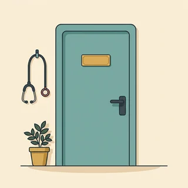
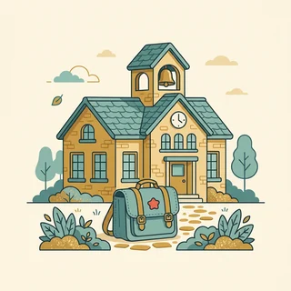
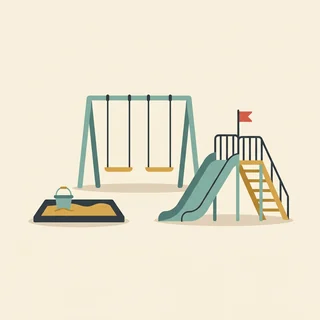

deutschoderwas · Sprechclub · Woche 9 · Strang C · Teil 2 · Mittwoch, 11. November
Die Debatte: Stadt gegen Dorf
Am Montag haben wir die Wörter gesammelt. Heute wird gestritten — freundlich, aber ernsthaft. Und dabei passiert etwas Merkwürdiges: Sobald es um Argumente geht, verwandelt das Deutsche seine Verben in Nomen. Aus der Laden schließt wird die Schließung des Ladens, aus der Bus wird ausgebaut wird der Ausbau der Buslinie. Wer das kann, klingt in jeder Diskussion, als hätte er das schon hundertmal gemacht.
Gleiches Thema, andere Sätze. Wechsle jederzeit — probier ruhig beide Seiten aus.
Ein Satz, zwei Bauweisen
Sag einmal: Der Laden schließt im Januar, und deshalb müssen die Älteren jetzt zwölf Kilometer fahren. Und dann: Die Schließung des Ladens zwingt die Älteren zu einer Fahrt von zwölf Kilometern. Dieselbe Aussage, dieselbe Länge — aber der zweite Satz klingt nach Zeitung, nach Gemeinderat, nach jemandem, der ernst genommen wird. Der Unterschied ist ein einziger Handgriff: aus dem Verb wird ein Nomen.
Diskutierst du gern — oder gehst du Streit lieber aus dem Weg?
Über welches Thema streitest du dich am häufigsten?
Fällt es dir auf Deutsch schwerer als in deiner Sprache?
Woran merkst du, dass jemand in einer Diskussion ernst genommen wird?
Ist eine sachliche Formulierung ehrlicher — oder nur höflicher?
Wann hast du zuletzt deine Meinung wegen eines guten Arguments geändert?
🔑 Der Handgriff von heute: Nimm das Verb und mach ein Nomen daraus. schließen → die Schließung, ausbauen → der Ausbau, entscheiden → die Entscheidung. Und was danach kommt, steht im Genitiv — genau wie am Montag.
Und dann die Kunst, es nicht zu übertreiben
Deutsche Behörden haben aus diesem Handgriff eine Krankheit gemacht: Nach erfolgter Prüfung der Sachlage unter Berücksichtigung der Stellungnahme … Niemand versteht das, und niemand will so klingen. Die Regel für heute lautet deshalb: ein bis zwei Nomen pro Satz — und das Verb, das wirklich zählt, bleibt ein Verb. Dann klingst du klar statt behördlich.
Verstehst du deutsche Briefe von Ämtern?
Welches deutsche Wort findest du am kompliziertesten?
Liest du Nachrichten auf Deutsch?
Warum schreiben Behörden so, obwohl es niemand versteht?
Wo ist die Grenze zwischen präzise und unverständlich?
Gibt es in deiner Sprache auch eine eigene Amtssprache?
💡 Die Faustregel: Ein Nomen macht den Satz sachlich. Drei machen ihn tot. Wenn du beim Vorlesen Luft holen musst, bevor der Satz zu Ende ist, war eines zu viel.
Kurz zurück: Montag in zwei Minuten
Falls du Teil 1 verpasst hast — das hier reicht, um heute mitzudiskutieren.
So ging die RegelNach diesen vier Präpositionen steht der Genitiv. Wegen der Miete, trotz des Lärms, während der Woche, statt des Autos.
der oder des
So gingen die FormenWeibliche Wörter und der Plural bekommen der. Männliche und sächliche bekommen des und ein s am Nomen.
Wie heißt der Lärm nach trotz?
Warum heißt es wegen der Kinder und nicht wegen den Kindern?
Was ist der Unterschied zwischen wegen und trotz im Argument?
🔁 Zu zweit, dreißig Sekunden: Einer nennt ein Wort aus der Liste, der andere baut sofort einen Satz mit wegen oder trotz im Genitiv. Danach geht es los — heute wird diskutiert.
Zwölf Wörter für die Diskussion
Fast alle sind aus einem Verb oder einem Adjektiv gebaut. Sag jedes Wort laut — und nenn sofort das Verb, das darin steckt: die Entscheidung → entscheiden.
die Meinung
„Meiner Meinung nach entscheidet die Anbindung alles.“
💡 Der wichtigste Baustein steht schon im Beispiel: meiner Meinung nach — mit Dativ, und nach steht hinten. Häufige Verwechslung: nach meiner Meinung geht auch, klingt aber steifer.
die Auseinandersetzung
„Die Auseinandersetzung über den Dorfladen dauert seit zwei Jahren.“
💡 Nicht dasselbe wie ein Streit: Eine Auseinandersetzung kann sachlich und produktiv sein. Man setzt sich mit einem Thema auseinander — das Verb ist trennbar und reflexiv.
der Vorschlag
„Mein Vorschlag wäre ein Bürgerbus zweimal täglich.“
💡 Von vorschlagen — und das Nomen hat keine -ung-Endung, sondern ist ein sogenanntes Nullsuffix: schlagen → der Schlag. Der Konjunktiv wäre macht den Vorschlag höflich statt fordernd.
die Entscheidung
„Die Entscheidung der Gemeinde fällt im Dezember.“
💡 Man trifft eine Entscheidung, man macht sie nicht. Und sie fällt — die Entscheidung fällt im Dezember heißt: Dann steht sie fest.
der Zusammenhalt
„Der Zusammenhalt im Dorf ist das stärkste Argument dafür.“
💡 Von zusammenhalten, ohne Endung. Das Gegenstück heißt die Anonymität — und für viele Menschen ist genau die ein Vorteil der Stadt, kein Nachteil.
die Gemeinde
„Die Gemeinde will die Buslinie ausbauen.“
💡 Zwei Bedeutungen, ein Wort: die politische Gemeinde (Rathaus, Bürgermeister) und die kirchliche Gemeinde. Im Gespräch über Busse und Läden ist immer die erste gemeint.
die Anmeldung
„Nach der Anmeldung beim Amt kam die Post automatisch.“
💡 In Deutschland Pflicht: Wer umzieht, muss sich innerhalb von zwei Wochen anmelden — das nennt man ummelden. Ohne Anmeldung gibt es keine Steuer-ID, kein Konto und keinen Kitaplatz.

die Schließung
„Die Schließung der Praxis trifft vor allem die Ältesten.“
💡 Von schließen. Und weil -ung-Wörter immer feminin sind, heißt es im Genitiv der Schließung — nie des. Diese Endung erspart dir das Artikellernen.
das Angebot
„Das kulturelle Angebot der Stadt ist unschlagbar.“
💡 Zwei Bedeutungen: das Angebot als Auswahl (ein großes Angebot an Kursen) und das Angebot als Sonderpreis (diese Woche im Angebot). In der Debatte ist fast immer die erste gemeint.

der Schulweg
„Wegen des langen Schulwegs stehen die Kinder um halb sechs auf.“
💡 Ein Wort, das in dieser Debatte oft alles entscheidet. Auf dem Land bedeutet es meistens der Schulbus — und der fährt einmal hin und einmal zurück, egal wann der Unterricht endet.

der Spielplatz
„Bis zum nächsten Spielplatz sind es zwei Straßen.“
💡 Klingt harmlos, ist aber ein echtes Argument: Wie viele Spielplätze, Vereine und Sportangebote es gibt, entscheidet für Familien oft mehr als der Quadratmeterpreis.
der Verkehr
„Die Belastung durch den Verkehr ist in der Innenstadt am höchsten.“
💡 der Verkehr hat keinen Plural. Und pass auf die Kombination auf: öffentlicher Verkehr ist Bus und Bahn, Individualverkehr das eigene Auto — in Gemeinderatspapieren stehen genau diese zwei Wörter.
💡 Spiel „Verb zurück“: Einer nennt ein Nomen von oben, der andere sagt sofort das Verb oder Adjektiv, das darin steckt, und baut damit einen ganzen Satz. die Entscheidung → entscheiden → Die Gemeinde entscheidet im Dezember. Wer keines findet, zieht ein neues Wort.
Vom Verb zum Nomen
Es gibt genau drei Wege, aus einem Verb oder Adjektiv ein Nomen zu machen. Wer sie kennt, baut sich jedes Argument selbst — und kennt nebenbei auch gleich den Artikel.
🅰️
Verb + -ung
immer die — ohne Ausnahme
schließen → die Schließung, entscheiden → die Entscheidung
🅱️
Adjektiv + -heit / -keit
ebenfalls immer die
frei → die Freiheit, einsam → die Einsamkeit
🅲
Der Infinitiv selbst
immer das — und großgeschrieben
warten → das Warten, wegziehen → das Wegziehen
✅ So ist es richtig
Die Schließung des Ladens trifft vor allem die Älteren.
Warum das stimmtAus der Laden schließt wird die Schließung des Ladens: das Verb wird zum Nomen, und das alte Subjekt rutscht in den Genitiv. Genau diese Verbindung brauchst du heute in jedem zweiten Argument.
❌ So klingt es falsch
Die Schließung von dem Laden trifft vor allem die Älteren.
Das ProblemNicht grammatisch falsch, aber in einem Argument deutlich schwächer. von dem gehört ins mündliche Erzählen; sobald du sachlich klingen willst, nimmst du den Genitiv.
✅ So ist es richtig
Wegen der Möglichkeit, dort günstig zu wohnen, ziehen viele Familien weg.
Warum das stimmt-keit macht das Wort feminin, also heißt es nach wegen im Genitiv der Möglichkeit. Alle Wörter auf -ung, -heit, -keit, -schaft und -ion sind feminin — das ist eine der wenigen Artikelregeln ohne Ausnahme.
❌ So klingt es falsch
Wegen dem Möglichkeit, dort günstig zu wohnen, ziehen viele Familien weg.
Das ProblemZwei Fehler in drei Wörtern: falscher Artikel (es heißt die Möglichkeit) und falscher Fall (nach wegen steht der Genitiv, nicht der Dativ).
✅ So ist es richtig
Weil der Bus nur zweimal fährt, brauchen dort alle ein Auto.
Warum das stimmtHier ist das Verb die bessere Wahl. Das Argument ist konkret und alltäglich — ein Nomen würde es nur schwerfälliger machen, nicht klarer.
❌ So klingt es übertrieben
Aufgrund der lediglich zweimaligen täglichen Bedienung der Haltestelle besteht dort eine Notwendigkeit zur Nutzung eines Kraftfahrzeugs.
Das ProblemVier Nomen hintereinander — das ist Amtsdeutsch. Es ist grammatisch korrekt und trotzdem eine schlechte Wahl: Niemand hört so zu. Ein bis zwei Nomen pro Satz, mehr nicht.
Vier Fragen, dann steht es fest:
Willst du sachlich klingen? Dann ein Nomen: die Schließung des Ladens statt der Laden schließt.
Erzählst du gerade eine Geschichte? Dann Verben. Nominalstil in einer Anekdote klingt kalt.
Hast du im selben Satz schon zwei Nomen? Dann lass das dritte weg und nimm ein Verb.
Suchst du den Artikel? Endet es auf -ung, -heit, -keit, -schaft oder -ion, ist es die. Ist es ein Infinitiv, ist es das.
Und ein Satz, der beides gut mischt: „Wegen der Schließung des einzigen Ladens müssen die Älteren jetzt zwölf Kilometer fahren.“ Zwei Nomen vorn, ein starkes Verb hinten — so sieht ein Argument aus, das man auch hören will.
🎯 Zu zweit, zwei Minuten: Einer sagt einen Satz mit Verb, der andere baut ihn sofort in den Nominalstil um. Der Bus fährt seltener. → Wegen der selteneren Busverbindung … Nach zehn Runden geht es von allein.
Vier Bausteine für die Debatte
Position beziehen, widersprechen, zustimmen, zusammenfassen. Diese vier Schritte braucht jede Diskussion — und in jedem steckt heute mindestens ein Nomen aus einem Verb.
1 · 🙋 Position beziehen Meiner Meinung nach …Ich finde, dass …Für mich ist wichtig, dass …Ich bin dafür, weil …
So klingt esMeiner Meinung nach ist die Anbindung wichtiger als der Preis.
2 · ✋ Widersprechen Das sehe ich anders.Da bin ich nicht deiner Meinung.Das stimmt, aber …Und was ist mit …?
So klingt esDas sehe ich anders — und was ist mit den Familien ohne Auto?
3 · 👍 Zustimmen Da hast du recht.Das ist ein gutes Argument.Genau das meine ich.Das sehe ich auch so.
So klingt esDa hast du recht, das ist ein gutes Argument — trotzdem bleibe ich dabei.
4 · 📌 Zusammenfassen Also, unterm Strich …Am Ende kommt es darauf an, ob …Wir sind uns einig, dass …Der Unterschied ist also …
So klingt esUnterm Strich kommt es darauf an, ob man ein Auto braucht oder nicht.
1 · 🙋 Position mit Nomen Entscheidend ist für mich die Anbindung.Der springende Punkt ist die Versorgung.Ich halte die Schließung für den größten Fehler.Aus meiner Sicht überwiegt der Zusammenhalt.
So klingt esEntscheidend ist für mich nicht die Höhe der Miete, sondern die Verlässlichkeit der Anbindung.
2 · ✋ Einwand mit Nomen Dabei übersiehst du die Belastung durch den Verkehr.Das gilt nur unter der Voraussetzung, dass …Die Kehrseite dieser Rechnung ist …Genau daran scheitert der Vorschlag.
So klingt esDabei übersiehst du die Belastung durch den Verkehr — die trifft in der Stadt jeden, nicht nur die Autofahrer.
3 · 👍 Zustimmen und weiterdrehen Dem stimme ich zu, allerdings …Das trifft zu, greift aber zu kurz.Da gehe ich mit, unter einer Bedingung:Genau daraus folgt für mich das Gegenteil.
So klingt esDem stimme ich zu, allerdings folgt für mich daraus genau das Gegenteil.
4 · 📌 Bilanz ziehen Unterm Strich überwiegen die Nachteile.Beide Seiten haben denselben blinden Fleck.Die Entscheidung hängt an einer einzigen Frage.Wir reden über zwei verschiedene Lebensphasen.
So klingt esUnterm Strich reden wir über zwei verschiedene Lebensphasen — und deshalb hat jede Seite in ihrer Phase recht.
Verb der Schritt was du damit tust Höflichkeit
📣 Reihum: Jeder muss den Schritt des Vorredners aufgreifen, bevor er selbst spricht — erst zustimmen oder widersprechen, dann die eigene Position. Wer ohne Bezug loslegt, gibt weiter.
Vier Situationen — zwei Runden
Runde 1: Lest den Dialog zu zweit laut. Runde 2: Klappt die Zeilen zu und sprecht frei — nur die Stichwörter bleiben.
Dialog 1 · „Die erste Runde“
A ist für die Stadt, B für das Dorf. Beide bekommen zwei Minuten — und müssen den anderen zuerst zusammenfassen, bevor sie widersprechen.
A
Meiner Meinung nach ist die Sache klar: Wer nicht fahren kann, ist auf dem Land verloren.
B
Also, du sagst: Die Abhängigkeit vom Auto ist der Kern. Da gehe ich mit — nur gilt dasselbe in der Stadt für die Miete.
🗣️ Erst zusammenfassen (du sagst …), dann zustimmen, dann drehen. Und die Abhängigkeit: -keit, also feminin.tippen = Hilfe zeigen
A
Die Miete kann ich verhandeln oder umziehen. Einen Bus, der nicht fährt, kann ich nicht verhandeln.
B
Das trifft zu, greift aber zu kurz. Der Ausbau der Buslinien ist eine politische Entscheidung — die Höhe der Mieten auch.
🗣️ Der Ausbau der Buslinien und die Höhe der Mieten: zweimal Nomen plus Genitiv. Genau die Bauweise, um die es heute geht.tippen = Hilfe zeigen
A
Nur wird über die eine seit dreißig Jahren geredet und über die andere jeden Tag.
B
Da hast du recht. Und trotzdem: Die Schließung des Ladens im Dorf bewegt hier alle. In der Stadt merkt es niemand.
🗣️ Die Schließung des Ladens — Verb zu Nomen, Rest im Genitiv. Und trotzdem hält die eigene Position, ohne unhöflich zu werden.tippen = Hilfe zeigen
Dialog 2 · „In der Bürgerversammlung“
A wohnt im Dorf und fordert einen Bus. B arbeitet bei der Gemeinde und muss erklären, was möglich ist.
A
Wir brauchen zwei Verbindungen mehr am Tag. Das ist keine große Forderung.
B
Ich verstehe den Wunsch. Die Finanzierung zusätzlicher Fahrten liegt aber bei etwa achtzigtausend Euro im Jahr.
🗣️ Die Finanzierung — -ung, also feminin. Und zusätzlicher Fahrten ist Genitiv Plural ohne Artikel: nur die Adjektivendung -er zeigt den Fall.tippen = Hilfe zeigen
A
Und was kostet es, wenn hier niemand mehr wohnen will?
B
Ein starkes Argument. Genau deshalb prüfen wir die Einrichtung eines Bürgerbusses mit ehrenamtlichen Fahrern.
🗣️ die Einrichtung eines Bürgerbusses. Bei ein heißt der Genitiv eines — plus -es am Nomen, wie bei des.tippen = Hilfe zeigen
A
Und wann wissen wir Bescheid?
B
Die Entscheidung des Gemeinderats fällt im Dezember. Bis dahin sammeln wir Unterschriften und Fahrerinnen.
🗣️ Die Entscheidung des Gemeinderats fällt — die Entscheidung fällt, man trifft sie. Zwei Verben, ein Wort, nie verwechseln.tippen = Hilfe zeigen
Dialog 3 · „Nach der Debatte“
A und B waren auf verschiedenen Seiten. Jetzt sitzen sie beim Kaffee und sind ehrlicher als vorhin.
A
Ehrlich? Ich habe vorhin für die Stadt geredet, aber wenn meine Tochter drei ist, ziehe ich raus.
B
Das habe ich mir fast gedacht. Die Entscheidung hängt weniger am Ort als an der Lebensphase.
🗣️ Die Entscheidung hängt an … — feste Verbindung mit Dativ. Und weniger … als stellt zwei Dinge gegeneinander.tippen = Hilfe zeigen
A
Mit zwanzig war die Stadt alles. Mit vierzig ist der Garten alles. Das ist doch albern.
B
Überhaupt nicht. Die Veränderung der eigenen Bedürfnisse ist der ehrlichste Teil der ganzen Debatte.
🗣️ Die Veränderung der eigenen Bedürfnisse: Nomen aus dem Verb verändern, dahinter der Genitiv Plural mit Adjektiv.tippen = Hilfe zeigen
A
Dann haben wir zwei Stunden über etwas gestritten, was gar keine Frage von richtig oder falsch ist.
B
Doch, eine gibt es: die Frage, ob ein Ort auch für die funktioniert, die keine Wahl haben.
🗣️ die Frage, ob … — nach einem Nomen kann ein ganzer Nebensatz stehen. Und der Relativsatz die keine Wahl haben setzt das Verb ans Ende.tippen = Hilfe zeigen
Dialog 4 · „Zu Hause, drei Tage später“
A hat in der Debatte eine Meinung vertreten, die B überrascht hat. Jetzt wird nachgehakt.
A
Du warst plötzlich so vehement für das Dorf. Das kannte ich gar nicht von dir.
B
Weil mir während der Diskussion aufgefallen ist, wie wenig ich unsere Nachbarn hier kenne.
🗣️ während der Diskussion — der Genitiv vom Montag. Und wie wenig ich … kenne: indirekter Fragesatz, Verb ans Ende.tippen = Hilfe zeigen
A
Wir kennen niemanden. Und ehrlich gesagt hat mich das bisher auch nicht gestört.
B
Mich schon. Der Zusammenhalt, von dem alle geredet haben, fehlt mir mehr, als ich dachte.
🗣️ Der Zusammenhalt, von dem … — Relativsatz mit Präposition. Nach von immer der Dativ: von dem.tippen = Hilfe zeigen
A
Dann fangen wir hier an. Wir kennen unsere Nachbarn seit vier Jahren nur vom Sehen.
B
Genau das war mein Vorschlag. Man braucht für die Veränderung nicht immer einen Umzug.
🗣️ für die Veränderung — nach für steht der Akkusativ, nicht der Genitiv. Nomen heißt nicht automatisch Genitiv.tippen = Hilfe zeigen
🎭 Und jetzt ihr: Spielt Dialog 1 mit vertauschten Rollen — jeder vertritt die Seite, die er nicht glaubt. Regel: Fass zuerst den anderen zusammen, dann widersprich. Und mindestens zweimal ein Nomen aus einem Verb.
🧩 Der Handgriff der Debatte: aus dem Verb wird ein Nomen
Deutsche Argumente stehen fast immer in Nomen. Das hat nichts mit Angeberei zu tun: Ein Nomen bündelt einen ganzen Vorgang in einem Wort und macht ihn dadurch verhandelbar. Über der Laden schließt kann man traurig sein — über die Schließung des Ladens kann man abstimmen.
Man nennt das Nominalisierung. Drei Wege führen dorthin: das Verb bekommt die Endung -ung (schließen → die Schließung), das Adjektiv bekommt -heit oder -keit (frei → die Freiheit), oder der Infinitiv wird einfach großgeschrieben (warten → das Warten). Der große Vorteil: Alle Wörter auf -ung, -heit, -keit, -schaft, -ion sind feminin, alle nominalisierten Infinitive sind sächlich — du kennst den Artikel also schon, bevor du das Wort gelernt hast. Und was beim Verb das Subjekt war, steht beim Nomen im Genitiv: aus die Gemeinde entscheidet wird die Entscheidung der Gemeinde. Damit hängen die beiden Tage dieser Woche direkt zusammen.
🅰️Der Satz mit VerbDer Laden schließt.
▾
🅱️Verb wird Nomendie Schließung …
▾
🅲Subjekt wird Genitiv… des Ladens
▾
🅳Und jetzt als ArgumentDie Schließung des Ladens trifft alle.
Nomen aus dem VerbDie Schließung
Genitivdes Ladens
Das starke Verbtrifft
Wen?vor allem die Älteren.
Die Endungen: und der Artikel gratis dazu
Fünf Endungen, ein Artikel: -ung, -heit, -keit, -schaft, -ion sind ausnahmslos feminin. Der nominalisierte Infinitiv ist immer das. Sag die Reihe laut und achte darauf, wie selbstverständlich der Artikel plötzlich ist.
♀️
-ung, -heit, -keit
immer die, ohne Ausnahme
die Versorgung, die Möglichkeit
⚲
Der Infinitiv
immer das, immer groß
das Warten, das Wegziehen
🔗
Ohne Endung
meist der — vom Verbstamm
der Ausbau, der Vorschlag, der Zuzug
schließen → die Schließungentscheiden → die Entscheidungfrei → die Freiheiteinsam → die Einsamkeitdie Nachbarn → die Nachbarschaftwarten → das Warten
Der Anschluss: Genitiv oder Präposition
Nach dem Nomen kommt das, was beim Verb das Subjekt oder das Objekt war — meistens im Genitiv. Manche Nomen behalten aber die Präposition ihres Verbs: die Belastung durch den Verkehr, die Auseinandersetzung über den Laden. Wenn du unsicher bist, denk an das Verb zurück.
🔑
Standard: Genitiv
das alte Subjekt rutscht dahinter
die Entscheidung der Gemeinde
🔁
Präposition bleibt
wenn das Verb schon eine hatte
die Belastung durch den Verkehr
⚠️
Die Grenze
mehr als zwei Nomen — Amtsdeutsch
Dann lieber wieder ein Verb
die Gemeinde entscheidet → die Entscheidung der Gemeindeder Bus wird ausgebaut → der Ausbau der Busliniedie Miete steigt → der Anstieg der Mieteder Verkehr belastet → die Belastung durch den Verkehrsie streiten über den Laden → die Auseinandersetzung über den Ladendie Kinder werden betreut → die Betreuung der Kinder
🧱 Bau die Sätze selbst
Tippe die Teile in der richtigen Reihenfolge an. Achte darauf, dass nach dem Nomen der Genitiv steht — und dass am Ende noch ein echtes Verb kommt.
📖 Und jetzt im Zusammenhang
Ein Bericht aus der Bürgerversammlung — so, wie er in der Lokalzeitung stehen würde. Wähle für jede Lücke das passende Nomen.
Drei Schritte, immer dieselben:
Nimm den Verbstamm und häng -ung an:schließen → die Schließung, versorgen → die Versorgung, entscheiden → die Entscheidung.
Geht das nicht, nimm den Infinitiv:das Warten, das Wegziehen, das Pendeln — großgeschrieben, Artikel das.
Setz das alte Subjekt in den Genitiv:die Gemeinde entscheidet → die Entscheidung der Gemeinde.
Prüf zum Schluss: Steht im Satz noch ein echtes Verb mit Bedeutung? Wenn nur noch ist oder erfolgt übrig ist, hast du zu viel nominalisiert.
Und der Test, ob es zu viel war: Lies den Satz laut vor. Wenn du in der Mitte Luft holen musst oder beim zweiten Nomen den Anfang vergessen hast, bau eines davon wieder in ein Verb zurück. Verständlich schlägt sachlich — immer.
🎭 Drei Situationen zu zweit
Einer eröffnet, einer widerspricht. Danach tauschen — und beim zweiten Mal die Seiten wechseln. Regel: Fass immer zuerst den anderen zusammen, und benutz mindestens zwei Nomen aus Verben.
1 · Die Debatte
A vertritt die Stadt, B das Dorf. Jeder hat zwei Minuten. Wer den anderen unterbricht, verliert dreißig Sekunden.
Ich bin für die Stadt, weil alles nah ist.Auf dem Land ist es viel ruhiger.Ohne Auto geht dort gar nichts.Dafür kennt man dort seine Nachbarn.
Meiner Meinung nach überwiegt die Versorgung — Ärzte, Schulen, Kurse, alles in fünfzehn MinutenDas trifft zu, greift aber zu kurz: Die Belastung durch den Verkehr trägt in der Stadt jeder mitDer Zusammenhalt der Nachbarschaft lässt sich nicht kaufen, und in der Stadt gibt es ihn seltenUnterm Strich hängt die Entscheidung an der Lebensphase, nicht am Ort
✅ Eine gute Runde enthältBeide haben den anderen zuerst zusammengefasst, bevor sie widersprochen haben, und mindestens zweimal ein Nomen aus einem Verb benutzt (die Versorgung, die Belastung, die Entscheidung).
2 · In der Bürgerversammlung
A fordert von der Gemeinde einen Bus oder einen Dorfladen. B arbeitet bei der Gemeinde und muss zwischen Wunsch und Haushalt vermitteln — ohne den Menschen abzubürsten.
Wir brauchen zweimal am Tag mehr einen Bus.Der letzte Laden macht im Januar zu.Was ist mit den Leuten ohne Auto?Wann entscheiden Sie das?
Ich verstehe die Forderung — die Finanzierung zusätzlicher Fahrten liegt aber bei achtzigtausend Euro im JahrDie Schließung des Ladens ist ein Verlust, das bestreitet niemand hier im RaumWir prüfen die Einrichtung eines Bürgerbusses mit ehrenamtlichen Fahrerinnen und FahrernDie Entscheidung des Gemeinderats fällt im Dezember, bis dahin brauchen wir Ihre Unterschriften
✅ Eine gute Runde enthältB hat sachlich erklärt statt sich zu rechtfertigen, A hat aus Ärger eine konkrete Forderung gemacht. Auf beiden Seiten mindestens zwei Nomen plus Genitiv.
3 · Die Seite wechseln
Beide vertreten jetzt die Position, die sie vorhin bekämpft haben — und müssen sie so gut vertreten, dass der andere es glaubt.
Also gut, ich bin jetzt für das Dorf.Das Wichtigste ist die Ruhe.Man braucht nicht alles vor der Tür.Meine Kinder hätten einen Garten.
Ich beginne mit dem stärksten Argument der Gegenseite und erkläre, warum es mich überzeugt hatDie Anonymität der Großstadt ist für viele keine Freiheit, sondern eine BelastungDie Möglichkeit, abends spontan loszugehen, verliert mit den Jahren an GewichtAm Ende ist es die Frage, wofür man seine Zeit ausgeben will — für Wege oder für Menschen
✅ Eine gute Runde enthältBeide haben ein echtes Argument der anderen Seite gefunden — kein Strohmann. Und mindestens einer hat zugegeben, dass ihn dabei etwas überzeugt hat.
🎴 Sprechkarten
Zieh eine Karte und sprich mindestens vier Sätze am Stück.
Deine Aufgabe
Tippe auf den Knopf.
⏱️ Die 90-Sekunden-Challenge
Neunzig Sekunden für eine Seite — und du weißt vorher nicht, welche. Der Partner nennt Stadt oder Dorf, dann läuft die Zeit. Mindestens vier Nomen aus Verben.
Dein Wort
die Meinung
1:30
Vier Sätze, dann trägt dich die Zeit:
Position:Meiner Meinung nach entscheidet die Versorgung / die Anbindung / der Zusammenhalt.
Argument mit Nomen:Die Schließung des Ladens / der Ausbau der Buslinie zeigt genau das.
Einwand vorwegnehmen:Man wird jetzt sagen, dass … — aber dabei wird die Belastung durch … übersehen.
Schluss:Unterm Strich hängt die Entscheidung an einer einzigen Frage: …
Und wenn dir mitten im Satz das Nomen fehlt: Sag ihn mit dem Verb zu Ende und bau ihn danach noch einmal um. Der Laden schließt — also: die Schließung des Ladens. Weitersprechen schlägt Stehenbleiben.
⏱️ Spielregel: Nach jeder Runde nennt der Partner ein Nomen, das gefehlt hat. Wer dreimal dieselbe Lücke hat, schreibt sich das Wort auf und bringt es nächste Woche mit.
✅ Sitzt es schon?
8 Fragen. Tippe auf deine Antwort — die Erklärung kommt sofort.
✍️ Lückentext
Wähle in jeder Lücke das passende Wort.
📣 Danach laut: Einer sagt reihum einen ganz normalen Satz mit Verb, der Nachbar baut ihn sofort in den Nominalstil um und hängt ein echtes Verb hinten dran. Der Bus fährt seltener. → Die seltenere Busverbindung trifft vor allem die Älteren.
📮 Deine Hausaufgabe bis Montag
Vier kleine Aufgaben, zusammen etwa 25 Minuten. Nächste Woche beginnt ein neues Thema — der Nominalstil bleibt dir aber, und du wirst ihn in jedem Text wiedererkennen.
💡 Warum das hilft: Nominalisierung ist der Unterschied zwischen „ich kann darüber reden“ und „ich kann darüber verhandeln“. Sie steckt in jedem Zeitungsartikel, jedem Amtsbrief und jeder B2-Prüfungsaufgabe. Wer sie in beide Richtungen beherrscht — Verb zu Nomen und wieder zurück —, versteht plötzlich Texte, die vorher unlesbar waren.
0 von 0 Aufgaben geschafft.
So sehen die Umbauten aus:
Der Laden schließt. → Die Schließung des Ladens trifft alle.
Die Gemeinde entscheidet. → Die Entscheidung der Gemeinde fällt im Dezember.
Die Miete steigt. → Der Anstieg der Miete geht weiter.
Die Kinder werden betreut. → Die Betreuung der Kinder ist gesichert.
Wir warten lange. → Das lange Warten nervt alle.
Ein einziger Test genügt: Steht am Ende deines neuen Satzes noch ein Verb mit echter Bedeutung? trifft, fällt, geht weiter, nervt — ja. Nur ist oder erfolgt — dann bau eines der Nomen zurück.
So klingt der Rückbau aus dem Amtsdeutsch:
Nach erfolgter Prüfung der Antragsunterlagen … → Wenn wir Ihre Unterlagen geprüft haben, …
Unter Berücksichtigung der Stellungnahme des Ausschusses … → Der Ausschuss hat sich geäußert, und deshalb …
Es besteht die Notwendigkeit zur Nutzung eines Kraftfahrzeugs. → Man braucht dort ein Auto.
Die Inanspruchnahme der Leistung setzt eine Anmeldung voraus. → Sie müssen sich vorher anmelden.
Zur Sicherstellung der Versorgung im ländlichen Raum … → Damit es auf dem Land weiter Läden und Ärzte gibt, …
Achte auf ein Muster: Im Amtsdeutsch steht das eigentliche Geschehen im Nomen, und übrig bleibt ein leeres Verb (erfolgt, besteht, setzt voraus). Der Rückbau besteht immer darin, das Geschehen wieder zum Verb zu machen — und schon steht ein Satz da, den man versteht.